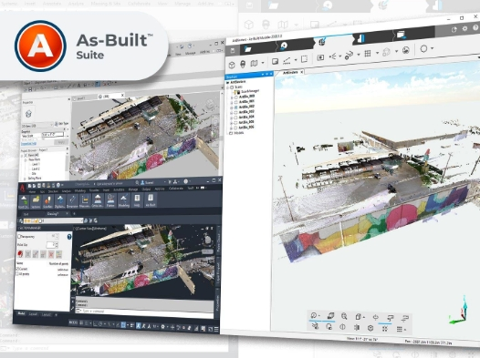

스캔 데이터를 CAD 및 BIM 모델로 활용하기 위한 소프트웨어 솔루션

As-Built Software Suite는 3D 레이저 스캔 데이터를 기반으로 기존 건축물, 플랜트, 설비의 현황 정보를 CAD 및 BIM 환경에서 활용할 수 있도록 지원하는 소프트웨어 제품군입니다.
현장 데이터를 도면화하고, 모델링하며, 설계 데이터와 실제 현장 상태를 비교하는 업무에 활용할 수 있습니다.
실제 현장의 3D 데이터를 기반으로 설계와 검토를 진행하여, 리모델링·증설·개보수 프로젝트의 오류 가능성을 줄일 수 있습니다.
스캔 데이터를 도면과 모델 작성에 활용하여 기존 수작업 중심의 현황 조사 및 모델링 시간을 줄이는 데 도움을 줍니다.
계획된 설계안과 실제 현장 데이터를 비교해 간섭, 여유 공간, 변경 필요 지점을 사전에 검토할 수 있습니다.
Focus Laser Scanning Solution으로 취득한 데이터를 SCENE Software에서 정합한 후, As-Built Software Suite를 통해 CAD 및 BIM 모델링 업무로 확장할 수 있습니다.